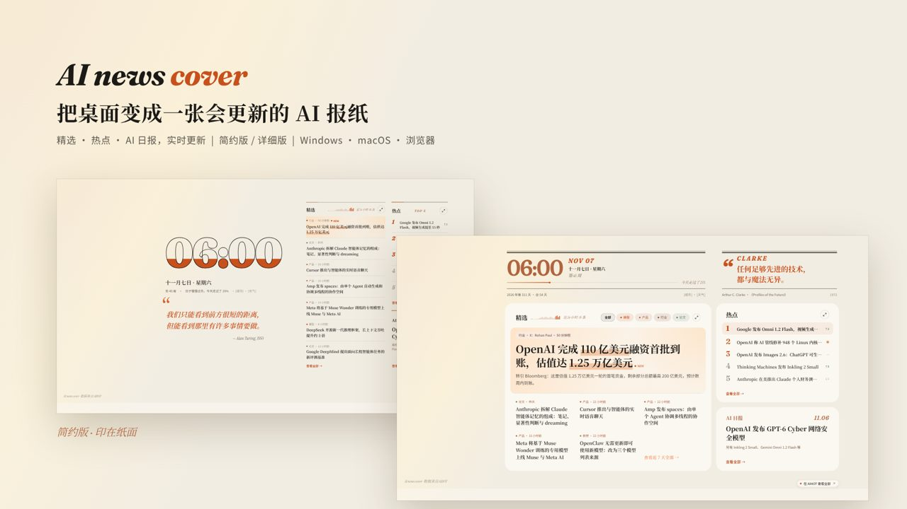

AI news cover
把桌面变成一张会更新的 AI 报纸。AI 资讯的来源太分散，我想让它离人再近一点，于是把 AIHOT 的精选、热点和日报搬到了桌面壁纸上。它按报纸的样子来设计：扫一眼标题、在原地展开、读摘要、跳到原文，每一步都在壁纸上完成。安装也交给 AI：把一条链接发给你的 AI 助手，它就能帮你装好。
Turns your desktop into an AI newspaper that keeps itself up to date. AI news is scattered across too many places, so I moved AIHOT's picks, trending items and daily digest onto the wallpaper. It reads like a newspaper: glance at headlines, expand a column in place, read a summary, then jump to the source, all without leaving the desktop. Installation is handed to AI too: send one link to your AI assistant and it sets everything up.